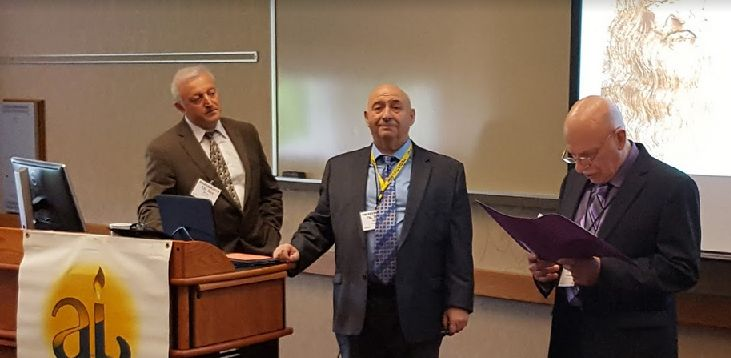
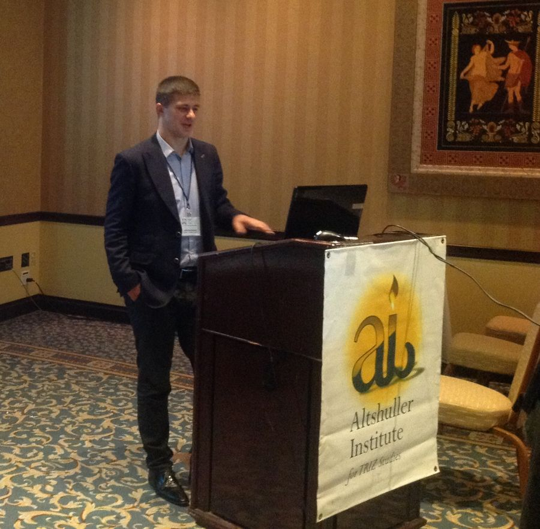
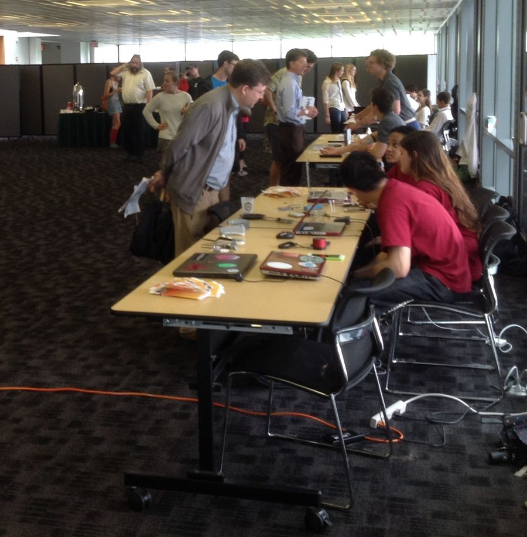
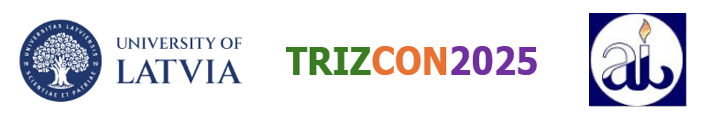

Home / Events
Conferences, webinars and meetings
Events
Talk with other professionals at TRIZ conferences. TRIZCON is the Institute's annual international event — an open platform for users, providers, supporters and students to come together and exchange information.

We will be traveling to Mexico for our conference. CIMAT will be our generous host for our annual event in 2026.
This year's conference
TRIZCON 2026 — Mexico
The Institute is creating a TRIZCON 2026 portal that will be the hub for all information and communications for the conference. The call for abstracts and papers is out now — review the conference details and submit your abstract in the portal.
- Dates3–5 November 2026
- HostCIMAT — Centro de Investigación en Matemáticas, Mexico
- PapersCall for abstracts and papers is open
- ThemeTo be announced
About the conference
What is TRIZCON?
TRIZCON is an annual international event held by the Altshuller Institute which provides an "open" platform for users, providers, supporters and students to come together and exchange information. Each year a vast collage of professionals from all walks of life get to meet each other and exchange stories — making new friends.
Come and join us each year and "unchain your brain." Meet new and interesting people who are passionate about innovation. Some attendees have brought their families, and the children have had a great time at the conference meeting such a unique and talented group of people.
Annual and lifetime members receive a 10% discount on the conference, and papers from past TRIZCON proceedings are available in the members' archive.

Archive
Past conferences
Year pages, abstracts and proceedings remain available. Detailed reviews of some years are reserved for paid members.
- 2025 Riga, Latvia — University of LatviaOctober 6–7, 2025. Theme: "The Resurgence of TRIZ with AI in support of education, manufacturing and science." Pre-conference workshop on October 3 introduced TRIZ to Latvian industry, educators and students. Overview, agenda & abstracts
- 2024 TRIZCON 2024Abstracts and speaker biographies are archived on the live site. Abstracts & bios
- 2023 TRIZCON 2023Abstracts are archived on the live site. Abstracts
- 2021 TRIZCON 2021Conference page archived on the live site. Conference page
- 2020 TRIZCON 2020Abstracts & papers, author guidelines and conference information. Abstracts & papers
- 2019 Purdue University — West Lafayette, IndianaHighlighted by seven keynote speakers and some fantastic papers. Info, abstracts & papers
- 2018 Purdue University — IndianaExcellent papers by Purdue students and several quality keynote speakers. Review for members (member login on aitriz.org)
- 2017 Atlantic City, New JerseyTopics included teaching innovation, the 40 Principles and working with young students. Review for members (member login on aitriz.org)
- 2016 Tulane University — New Orleans, Louisiana Review for members (member login on aitriz.org)



Online
Webinar series
The Institute's recorded webinar series remain available to members. Three series are in the video library:
- Webinar Series — Systematic Innovation Methods
- Webinar Series — The Soft Side of TRIZ
- Webinar Series — Guided Brainstorming
There are no upcoming live webinars scheduled at this time. New sessions will be announced to members through the monthly E-Newsletter.
Webinar videosTraining calendar
Courses and workshops from TRIZ providers — including virtual multi-session courses and certification-preparation workshops — are listed on the training schedule.
See the training scheduleHost or sponsor a TRIZCON
Countries, companies or individuals who would like to host or sponsor a TRIZCON event can request a quotation from the Institute. See sponsorship.
Recognition
Awards presented at TRIZCON
Every year at TRIZCON, members of the Altshuller Institute are recognized and honored for their contributions to the Institute or their outstanding work in other fields.
TRIZ Hall of Fame Award
The highest award given by the Institute, recognizing a sustained high level of contribution to the practice and advancement of TRIZ. Anyone in the world is eligible. Recent inductees: Genrikh Altshuller (2016), Alexander Selyutski (2017), Voluslav V. Mitrofanov (2018), Dr. Pesakh Amnuel (2019).
Distinguished Service Award
The highest distinction for service to the Altshuller Institute and the missions for which it stands, honoring long-term enablers and prime movers. Recent recipients: Lev Shulyak (2016), Richard Langevin (2017), Donald Coates (2018), Isak Bukhman (2019).
Best Practice Award
Presented for the most outstanding leadership and significant results in the application of modern TRIZ methods on a specific project or improvement opportunity. Recent recipients: Ideation International Inc. (2016), Jack Hipple (2017), James Bradley (2018), Dr. Boris Farber (2019).
Educational Excellence Award
For outstanding leadership in the practice of teaching TRIZ as an academic subject, including influencing schools and colleges to adopt TRIZ programs. Recent recipients: Darrell Mann (2016), Victor Fey (2017), Denis Cavallucci (2018), Prof. Kartik Ariyur (2019).